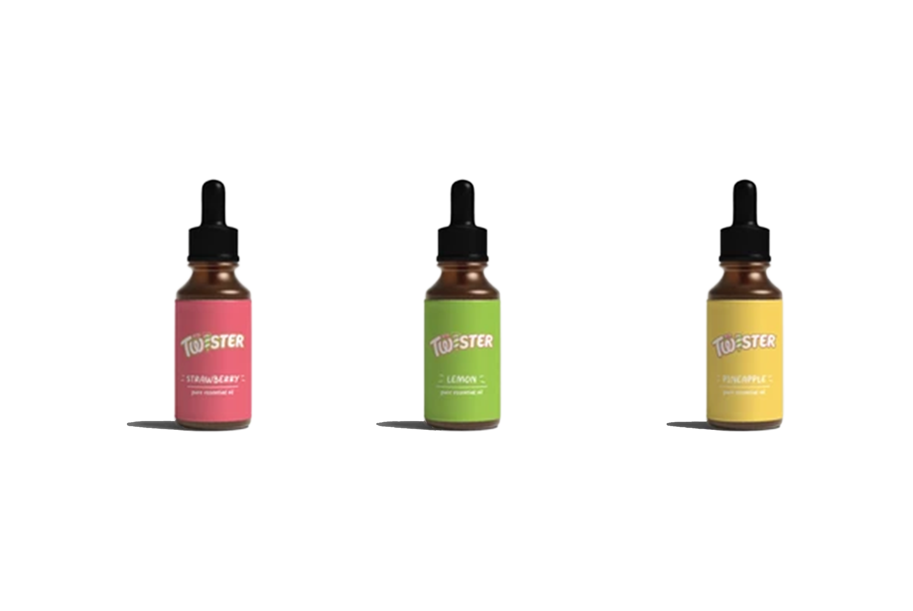
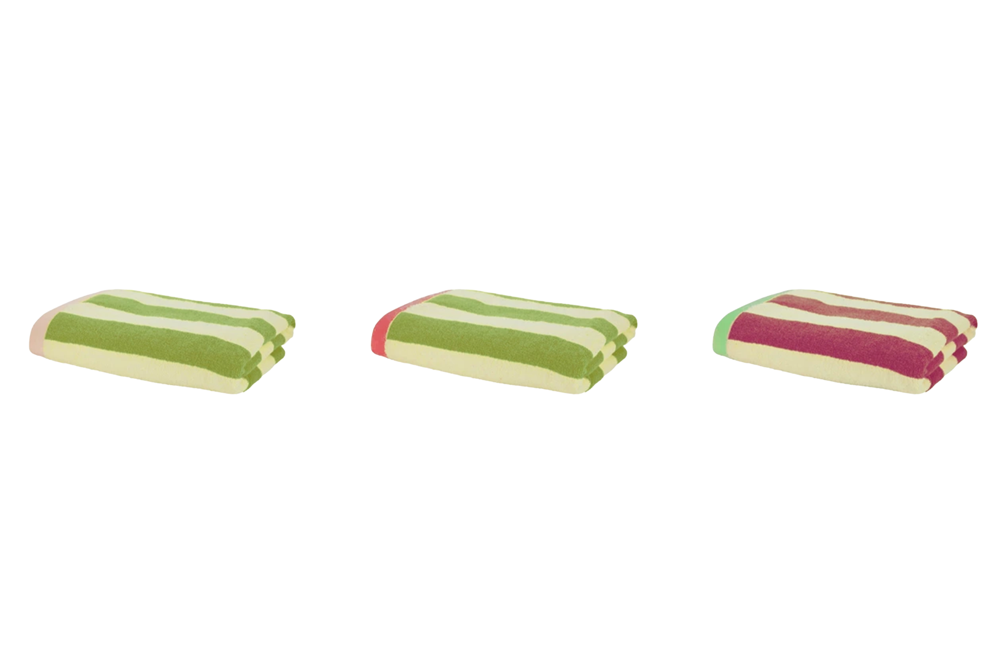

Lavet med:
Caroline Berg Preisler & Laura Høgsbro
Award:
D&AD New Blood
Wooden Pencil
Brief
Make Twister an icon forever, not just for summer
Problem
Scandinavians have a bigger risk to get seasonal affective disorder (SAD).
Seasonal affective disorder, is caused by less sunlight.
Some of the common symptoms are: Trouble thinking clearly, fatigue, weight gain and anxiety.
Fact
In Denmark there is 170 rainy days a year and a average of only 19 summerdays a year.
1 out of 10 Danes have symptoms of seasonal affective disorder.
Trend
Saunagus is a fast grown wellness care, that is popular in the Scandinavian countries.
Solution
Twister saunagus:
Twister bring the warmth of the summer into the coldest and darkest time of the year.
Kampagnevideo
Step 1
February 1
Campaign start. On the most likely cold day, twister will hand out icecream. The twist is, that the icecream leads to a landing page.

Step 2
The landing page
Here will the participants book a session.

Step 3
February 14-31
The main event of the campaign: Saunagus session. The participants will try the twister sauna.

Elements
The sauna seen from 180° degrees

The etheric oils

The towels

The icecream ticket